폐기물처리산업기사 (2014-09-20 기출문제)
1과목: 폐기물개론
1. A, B, C 세 가지 물질로 구성된 쓰레기 시료를 채취하여 분석한 결과 함수율이 55% 인 A 물질이 35% 발생되고, 함수율 5%인 B 물질이 60% 발생되었다. 나머지 C물질은 함수율이 10%인 것으로 나타났다면 전체 쓰레기의 함수율은?
- 23%
- 28%
- 32%
- 37%
(정답률: 47%)
2. 고형분이 45%인 주방쓰레기 10톤을 소각하기 위해 함수율이 30% 되도록 건조 시켰다. 이 건조 쓰레기의 중량은? (단, 비중은 1.0 기준)
- 4.3톤
- 5.5톤
- 6.4톤
- 7.2톤
(정답률: 72%)

3. 인구 1200만인 도시에서 년간 배출된 총 쓰레기량이 970만 톤 이었다면 1인당 하루 배출량(kg/인·일)은?
- 2.0
- 2.2
- 2.4
- 2.6
(정답률: 79%)
4. 다음 중 관거(pipe line) 수거에 대한 설명으로 옳지 않은 것은?
- 쓰레기 발생밀도가 높은 인구밀집지역에서 현실성이 있다.
- 가설 후에 관로변경 등 사후관리가 용이하다.
- 조대폐기물은 파쇄 등의 전처리가 필요하다.
- 장거리 이송에서는 이용이 곤란하다.
(정답률: 82%)
5. 쓰레기의 발생량 조사방법인 직접계근법에 관한 내용으로 옳지 않은 것은?
- 입구에서 쓰레기가 적재되어 있는 차량과 출구에서 쓰레기를 적하한 공차량을 각각 계근하여 그 차이로 쓰레기량을 산출한다.
- 적재차량 계수분석에 비하여 작업량이 적고 간단하다.
- 비교적 정확한 쓰레기 발생량을 파악할 수 있다.
- 일정기간동안 특정지역의 쓰레기 수거, 운반차량을 중간적하장이나 중계처리장에서 직접 계근하는 방법이다.
(정답률: 85%)
6. 전단 파쇄기에 관한 설명으로 옳지 않은 것은?
- 충격파쇄기에 비해 이물질의 혼입에 약하나 폐기물의 입도가 고르다.
- 고정칼, 왕복 또는 회전칼과의 교합에 의하여 폐기물을 전단한다.
- 주로 목재류, 플라스틱류 및 종이류를 파쇄 하는데 이용된다.
- 충격파쇄기에 비해 대체적으로 파쇄속도가 빠르다.
(정답률: 85%)
7. 인구 35만 도시의 쓰레기 발생량이 1.5kg/인·일 이고, 이 도시의 쓰레기 수거율은 90%이다. 적재용량이 10ton인 수거차량으로 수거한다면 하루에 몇 대로 운반해야 하는가?
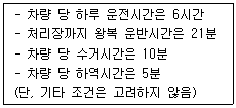
- 3대
- 5대
- 7대
- 9대
(정답률: 47%)
8. 폐기물을 분쇄하거나 파쇄하는 목적과 가장 거리가 먼 것은?
- 겉보기 비중의 감소
- 유가물의 분리
- 비표면적의 증가
- 입경분포의 균일화
(정답률: 60%)
9. 청소상태 만족도 평가를 위한 지역사회 효과 지수인 CEI(Community Effects Index)에 관한 설명으로 옳은 것은?
- 적환장 크기와 수거량의 관계로 결정한다.
- 수거방법에 따른 MHT 변화로 측정한다.
- 가로(街路) 청소상태를 기준으로 측정한다.
- 일반대중들에 대한 설문조사를 통하여 결정한다.
(정답률: 84%)
10. 쓰레기를 압축시켜 용적 감소율(Volume reduction)이 61%인 경우 압축비(Compactor ratio)는?
- 2.1
- 2.6
- 3.1
- 3.6
(정답률: 83%)
11. 건조된 고형분 비중이 1.54 이고 건조 전 슬러지의 고형분 함량이 60%, 건조중량이 400kg 이라 할 때 건조 전 슬러지의 비중은?
- 약 1.12
- 약 1.16
- 약 1.21
- 약 1.27
(정답률: 34%)
12. 다음 중 적환장의 형식과 가장 거리가 먼 것은?
- direct discharge
- storage discharge
- compact discharge
- direct end storage discharge
(정답률: 62%)
13. 쓰레기 수거노선 선정 시 고려할 내용으로 옳지 않은 것은?
- 출발점은 차고와 가까운 곳으로 한다.
- 언덕지역은 올라가면서 수거한다.
- 가능한 한 시계방향으로 수거한다.
- 발생량이 많은 곳은 하루 중 가장 먼저 수거한다.
(정답률: 95%)
14. 쓰레기 발생량에 관한 내용으로 옳지 않은 것은?
- 가정의 부엌에서 음식쓰레기를 분쇄하는 시설이 있으면 음식쓰레기의 발생량이 감소된다.
- 일반적으로 수집빈도가 높을수록 쓰레기 발생량이 감소한다.
- 일반적으로 쓰레기통이 클수록 쓰레기 발생량이 증가한다.
- 대체로 생활수준이 증가되면 쓰레기의 발생량도 증가한다.
(정답률: 94%)
15. 인구 1인당 1일 1.5kg의 쓰레기를 배출하는 4000명이 거주하는 지역의 쓰레기를 적재능력 10m3, 압축비 2인 쓰레기차로 수거할 때, 1일 필요한 차량 수는? (단, 발생 쓰레기 밀도는 120kg/m3 이며, 쓰레기차는 1회 운행)
- 2대
- 3대
- 4대
- 5대
(정답률: 39%)
16. 폐기물 발생량의 조사방법중 물질수지법에 관한 설명으로 옳지 않은 것은?
- 물질수지를 세울 수 있는 상세한 데이터가 있는 경우에 가능하다.
- 주로 생활폐기물의 종류별 발생량 추산에 사용된다.
- 조사하고자 하는 계(system)의 경계를 명확하게 설정 하여야 한다.
- 계(system)로 유입되는 모든 물질들과 유출되는 물질들 간의 물질수지를 세움으로써 폐기물 발생량을 추정한다.
(정답률: 88%)
17. 쓰레기의 압축 전 밀도가 0.52 ton/m3이던 것을 압축기로 압축하여 0.85 ton/m3로 되었다. 부피의 감소율은?
- 28%
- 39%
- 46%
- 51%
(정답률: 75%)
18. 자력선별을 통해 철캔을 알루미늄캔으로부터 분리 회수한 결과가 다음과 같다면 Worrell 식에 의한 선별효율(%)은?
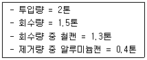
- 69%
- 67%
- 65%
- 62%
(정답률: 36%)
19. 가볍고 물렁거리는 물질로부터 무겁고 딱딱한 물질을 분리해 낼 때 사용하며, 주로 퇴비 중의 유리조각을 추출할 때 사용하는 선별방법은?
- Tables
- Secators
- Jigs
- Stoners
(정답률: 90%)
20. 쓰레기 발생량 예측 모델 중 쓰레기 발생량에 영향을 주는 모든 인자를 시간에 대한 함수로 하여 각 영향 인자들 간의 상관관계를 수식화 하는 방법은?
- 시간경향모델
- 다중회귀모델
- 동적모사모델
- 시간수지모델
(정답률: 94%)
2과목: 폐기물처리기술
21. 매립시 적용되는 연직차수막과 표면차수막에 관한 설명으로 옳지 않은 것은?
- 연직차수막은 지중에 수평방향의 차수층 존재시 사용된다.
- 연직차수막은 지하수 집배수시설이 불필요하다.
- 연직차수막은 지하매설로써 차수성 확인이 어려우나 표면차수막은 시공시 확인이 가능하다.
- 연직차수막은 단위면적당 공사비는 싸지만 총공사비는 비싸다.
(정답률: 72%)
22. 다음과 같은 조건의 축분과 톱밥 쓰레기를 혼합한 후 퇴비화 하여 함수량 20%의 퇴비를 만들었다면 퇴비량은? (단, 퇴비화시 수분 감량만 고려하며, 비중은 1.0)
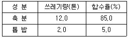
- 4.63 ton
- 5.23 ton
- 6.33 ton
- 7.83 ton
(정답률: 60%)
23. 합성차수막 중 CR에 관한 설명으로 옳지 않은 것은?
- 가격이 싸다.
- 대부분의 화학물질에 대한 저항성이 높다.
- 마모 및 기계적 충격에 강하다.
- 접합이 용이하지 못하다.
(정답률: 73%)
24. 어떤 액체 연료를 보일러에서 완전 연소시켜 그 배기가스를 분석한 결과 CO2 13%, O2 3%, N2 84% 이었다. 이 때 공기비는?
- 1.16
- 1.26
- 1.36
- 1.46
(정답률: 36%)
25. 용량 1⑤m3의 매립지가 있다. 밀도 0.5t/m3인 도시 쓰레기가 400,000kg/일 율로 발생 된다면 매립지 사용일수는? (단, 매립지 내의 다짐에 의한 쓰레기 부피감소율은 고려하지 않음)
- 125일
- 275일
- 345일
- 445일
(정답률: 53%)
26. 분뇨를 호기성 소화방식으로 처리하고자 한다. 소화조의 처리용량이 100m3/day인 처리장에 필요한 산기관 수는? (단, 분뇨의 BOD 20,000mg/L, BOD처리효율 75%, 소모공기량 100m3/BOD kg, 산기관 1개당 통풍량 0.2m3/min, 연속 산기방식)
- 약 420개
- 약 470개
- 약 520개
- 약 570개
(정답률: 67%)
27. RDF(Refuse Derived Fuel)의 구비조건과 가장 거리가 먼 것은?
- 재의 양이 적을 것
- 대기오염이 적을 것
- 함수율이 낮을 것
- 균일한 조성을 피할 것
(정답률: 58%)
28. 처리용량이 20kL/day인 분뇨처리장에 가스저장 탱크를 설계하고자 한다. 가스 저류기관을 3 hr 으로 하고 생성 가스량을 투입량의 8배로 가정한다면 가스탱크의 용량은? (단, 비중은 1.0 기준)
- 20m3
- 60m3
- 80m3
- 120m3
(정답률: 79%)
29. 고형물 중 VS 60% 이고, 함수율 97%인 농축슬러지 100m3를 소화시켰다. 소화율(VS 대상)이 50%이고, 소화 후 함수율이 95% 라면 소화 후의 부피는? (단, 모든 슬러지의 비중은 1.0 이다.)
- 32m3
- 35m3
- 42m3
- 48m3
(정답률: 57%)
30. 분뇨처리장 1차 침전지에서 1일 슬러지의 제거량이 50m3/day이고 SS농도가 20000mg/L 이었으며 이를 원심분리기에 의하여 탈수시켰을 때 탈수 슬러지의 함수율이 80%이었다면 탈수된 슬러지 양은? (단, 원심분리기의 SS회수율은 100%, 슬러지 비중은 1.0)
- 3ton/day
- 5ton/day
- 8ton/day
- 10ton/day
(정답률: 64%)
31. 토양공기의 조성에 관한 설명으로 틀린 것은?
- 토양성분과 식물양분에 산화적 변화를 일으키는 원인이 된다.
- 대기에 비하여 토양공기 내 탄산가스의 함량이 낮다.
- 대기에 비하여 토양공기 내 수증기의 함량이 높다.
- 토양이 깊어질수록 토양공기 내 산소함량은 감소한다.
(정답률: 47%)
32. 아래와 같이 운전되는 Batch Type 소각로의 쓰레기 kg 당 전체발열량(저위발열량+공기예열에 소모된 열량)은?
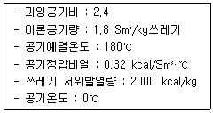
- 약 2⑤0kcal/kg
- 약 2250kcal/kg
- 약 2450kcal/kg
- 약 2650kcal/kg
(정답률: 36%)
33. 폐기물 고화처리방법 중 자가시멘트법의 장단점으로 옳지 않은 것은?
- 혼합률이 높은 단점이 있다.
- 중금속 저지에 효과적인 장점이 있다.
- 탈수 등 전처리가 필요 없는 장점이 있다.
- 보조에너지가 필요한 단점이 있다.
(정답률: 72%)
34. 침출수를 혐기성 공정으로 처리하는 경우, 장점이라 볼 수 없는 것은?
- 고농도의 침출수를 희석 없이 처리할 수 있다.
- 중금속에 의한 저해효과가 호기성 공정에 비해 적다.
- 대부분의 염소계 화합물은 혐기성상태에서 분해가 잘 일어나므로 난분해성 물질을 함유한 침출수의 처리시 효과적이다.
- 호기성 공정에 비해 낮은 영양물 요구량을 가지므로 인(P) 부족현상을 일으킬 가능성이 적다.
(정답률: 46%)
35. 유기성 폐기물 퇴비화에 대한 설명으로 가장 거리가 먼 것은?
- 다른 폐기물처리 기술에 비하여 고도의 기술수준이 요구되지 않는다.
- 퇴비화 과정에서 부피가 90% 이상 줄어 최종처리시 비용이 절감된다.
- 다양한 재료를 이용하므로 퇴비제품의 품질표준화가 어렵다.
- 초기 시설 투자가 적으며 운영시에 소요되는 에너지도 낮다.
(정답률: 48%)
36. 점토가 매립지에서 차수막으로 적합하기 위한 액성한계기준으로 가장 적절한 것은?
- 10% 미만
- 10% 이상 30% 미만
- 20% 이하
- 30% 이상
(정답률: 28%)
37. 1차 반응속도에서 반감기(초기농도가 50% 줄어드는 시간)가 10분이다. 초기농도의 75%가 줄어드는데 걸리는 시간은?
- 20분
- 30분
- 40분
- 50분
(정답률: 77%)
38. 어느 매립지의 쓰레기 수용량은 1,635,200m3 이고, 수거 대상 인구는 100,000명, 1인 1일 쓰레기 발생량은 2.0kg, 매립시의 쓰레기 부피 감소율은 30% 라 할 때 매립지의 사용 년 수는? (단, 쓰레기 밀도는 500kg/m3 으로 수거시의 밀도임)
- 6년
- 8년
- 12년
- 16년
(정답률: 42%)
39. 메탄올(CH3OH) 5kg이 연소하는데 필요한 이론공기량은?
- 15 Sm3
- 20 Sm3
- 25 Sm3
- 30 Sm3
(정답률: 67%)
40. Rotary kiln 소각로의 장단점으로 틀린 것은?
- 습식가스 세정시스템과 함께 사용할 수 있는 장점이 있다.
- 비교적 열효율이 낮은 단점이 있다.
- 용융상태의 물질에 의하여 방해를 받는 단점이 있다.
- 폐기물의 체류시간을 로의 회전속도 조절로 제어할 수 있는 장점이 있다.
(정답률: 65%)
3과목: 폐기물 공정시험 기준(방법)
41. 고상 또는 반고상 폐기물의 pH 측정법 중 옳은 것은?
- 시료 10g을 100mL 비커에 취한 다음 정제수 50mL를 넣어 잘 교반하여 10분 이상 방치
- 시료 10g을 100mL 비커에 취한 다음 정제수 50mL를 넣어 잘 교반하여 30분 이상 방치
- 시료 10g을 50mL 비커에 취한 다음 정제수 25mL를 넣어 잘 교반하여 10분 이상 방치
- 시료 10g을 50mL 비커에 취한 다음 정제수 25mL를 넣어 잘 교반하여 30분 이상 방치
(정답률: 69%)
42. 대상 폐기물의 양이 50ton 인 경우 시료는 최소한 몇 개가 필요한가?
- 6
- 10
- 14
- 20
(정답률: 85%)
43. 유도결합플라스마-원자발광분광법으로 측정할 수 있는 항목과 가장 거리가 먼 것은? (단, 폐기물공정시험기준 기준)
- 6가 크롬
- 수은
- 비소
- 크롬
(정답률: 67%)
44. 고형물의 함량이 50%, 수분함량이 50%, 강열감량이 85%인 폐기물이 있다. 이 때 폐기물의 고형물 중 유기물 함량은?
- 50%
- 60%
- 70%
- 80%
(정답률: 74%)
45. 편광현미경법으로 석면 분석시 시료의 채취량에 관한 내용으로 옳은 것은?
- 시료의 양은 1회에 최소한 면적단위로는 1cm2, 부피단위로 1cm3, 무게단위는 1g 이상 채취한다.
- 시료의 양은 1회에 최소한 면적단위로는 1cm2, 부피단위로 1cm3, 무게단위는 2g 이상 채취한다.
- 시료의 양은 1회에 최소한 면적단위로는 1cm2, 부피단위로 2cm3, 무게단위는 3g 이상 채취한다.
- 시료의 양은 1회에 최소한 면적단위로는 2cm2, 부피단위로 2cm3, 무게단위는 3g 이상 채취한다.
(정답률: 67%)
46. 자외선/가시선 분광법으로 구리를 측정할 때 간섭물질에 대한 내용으로 옳은 것은?
- 비스무트(Bi)가 구리의 양보다 2배 이상 존재할 경우에는 적자색을 나타내어 방해한다.
- 비스무트(Bi)가 구리의 양보다 2배 이상 존재할 경우에는 청색을 나타내어 방해한다.
- 비스무트(Bi)가 구리의 양보다 2배 이상 존재할 경우에는 적색을 나타내어 방해한다.
- 비스무트(Bi)가 구리의 양보다 2배 이상 존재할 경우에는 황색을 나타내어 방해한다.
(정답률: 78%)
47. 이온전극법을 이용한 시안측정에 관한 설명으로 옳지 않은 것은?
- pH 4 이하의 산성으로 조절한 후 시안 이온전극과 비교전극을 사용하여 전위를 측정한다.
- 시안화합물을 측정할 때 방해물질들은 증류하면 대부분 제거된다.
- 다량의 지방성분을 함유한 시료는 아세트산 또는 수산화나트륨용액으로 pH 6∼7로 조절한 후 시료의 약 2%에 해당하는 부피의 노말 헥산 또는 클로로폼을 넣어 추출하여 유기층은 버리고 수층을 분리하여 사용한다.
- 시료는 미리 세척한 유리 또는 폴리에틸렌용기에 채취한다.
(정답률: 47%)
48. 기체크로마토그래프-질량분석법에 의한 유기인 분석방법에 관한 설명으로 옳지 않은 것은?
- 운반기체는 부피백분율 99.999% 이상의 헬륨을 사용한다.
- 질량분석기는 자기장형, 사중극자형 및 이온트랩형 등의 성능을 가진 것을 사용한다.
- 질량분석기의 이온화방식은 전자충격법(EI)을 사용하며 이온화에너지는 35∼70 eV을 사용한다.
- 정성분석에는 메트릭스 검출법을 이용하는 것이 바람직하다.
(정답률: 58%)
49. 무게를 ‘정확히 단다’ 라 함은 규정된 수치의 무게를 몇 mg 까지 다는 것을 말하는가?
- 0.0001mg
- 0.001mg
- 0.01mg
- 0.1mg
(정답률: 53%)
50. 다음 설명하는 시료의 분할채취방법은?
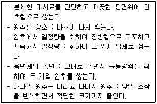
- 구획법
- 교호삽법
- 원추 4분법
- 원추 분할법
(정답률: 77%)
51. 유기물 함량이 비교적 높지 않고 금속의 수산화물, 산화물 인산염 및 황화물을 함유하고 있는 시료에 적용되는 산분해법은?
- 질산-황산 분해법
- 질산-염산 분해법
- 질산-과염소산 분해법
- 질산-불화수소산 분해법
(정답률: 75%)
52. 다음은 폐기물 소각시설의 소각재 시료 채취 방법 중 연속식 연소방식의 소각재 반출 설비에서의 시료 채취에 관한 내용이다. ( )안에 옳은 것은?
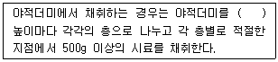
- 0.3 m
- 0.5 m
- 1 m
- 2 m
(정답률: 63%)
53. 유도결합플라스마 원자발광분광법으로 금속류를 분석하는 경우에 관한 설명으로 틀린 것은?
- 대부분의 간섭 물질은 산 분해에 의해 제거된다.
- 장비가 허용된다면 가능한 파장의 간섭을 알기위해 전파장 분석을 수행한다.
- 플라스마 가스는 액화 또는 압축헬륨으로 순도는 99.99% 이상인 것을 사용한다.
- 분석장치는 시료도입부, 고주파전원부, 광원부, 분광부, 연산처리부 및 기록부로 구성되어 있다.
(정답률: 27%)
54. 다음의 유리전극법에 의한 pH 측정시에 정밀도에 관한 내용이다. ( )안에 들어갈 내용으로 옳은 것은?
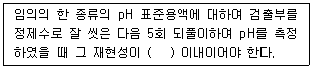
- 0.01
- 0.⑤
- 0.1
- 0.5
(정답률: 77%)
55. 총칙에서 규정하고 있는 사항 중 옳은 것은?
- “약”이라 함은 기재된 양에 대하여 ± 5% 이상의 차이가 있어서는 안된다.
- “감압 또는 진공”이라 함은 따로 규정이 없는 한 5mmHg 이하를 말한다.
- “정확히 취하여”라 함은 규정한 양의 액체 또는 고체 시료를 화학저울 또는 미량저울로 정확히 취하는 것을 말한다.
- “정량적으로 씻는다”라 함은 어떤 조작으로부터 다음 조작으로 넘어갈 때 사용한 비커, 플라스크 등의 용기 및 여과막 등에 부착한 정량대상 성분을 사용한 용매로 씻어 그 씻어낸 용액을 합하고 먼저 사용한 같은 용매를 채워 일정용량으로 하는 것을 뜻한다.
(정답률: 50%)
56. 폐기물 용출조작에 관한 설명으로 틀린 것은?
- 상온, 상압에서 진탕회수가 매분 당 약 200회로 한다.
- 진폭이 5∼6 cm의 진탕기를 사용한다.
- 진탕기로 6시간 연속 진탕한다.
- 여과가 어려운 경우 원심분리기를 사용하여 매분 당 3,000회전 이상으로 20분 이상 원심 분리한다.
(정답률: 65%)
57. 원자흡수분광광도법(공기-아세틸렌 불꽃)으로 크롬을 분석할 때, 철, 니켈, 등의 공존물질에 의한 방해영향이 크다. 이 때 어떤 시약을 넣어 측정하는가?
- 질산나트륨
- 인산나트륨
- 황산나트륨
- 염산나트륨
(정답률: 75%)
58. 다음은 용출을 위한 시료용액의 조제에 관한 내용이다. ( )안에 옳은 내용은?
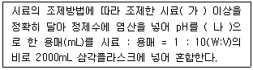
- 가 : 50g, 나 : 5.8∼6.3
- 가 : 100g, 나 : 5.8∼6.3
- 가 : 50g, 나 : 4.3∼5.8
- 가 : 100g, 나 : 4.3∼5.8
(정답률: 80%)
59. 편광현미경법으로 석면을 측정할 때 석면의 정량범위는?
- 1∼25%
- 1∼50%
- 1∼75%
- 1∼ 100%
(정답률: 72%)
60. 용출실험 결과 시료 중의 수분함량을 보정해 주기 위해 적용(곱)하는 식으로 옳은 것은?(단, 함수율 85% 이상인 시료에 한함)
- 85/(100-함수율(%))
- (100-함수율(%))/85
- 15/(100-함수율(%))
- (100-함수율(%))/15
(정답률: 74%)
4과목: 폐기물 관계 법규
61. 다음은 폐기물처리업자 또는 폐기물처리신고자의 휴업ㆍ폐업 등의 신고에 관한 내용이다. ( )안에 옳은 내용은?
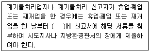
- 10일 이내
- 15일 이내
- 20일 이내
- 30일 이내
(정답률: 85%)
62. 사업장폐기물을 폐기물처리업자에게 위탁하여 처리하려는 사업장폐기물배출자는 환경부장관이 고시하는 폐기물 처리 가격의 최저액보다 낮은 가격으로 폐기물을 위탁하여서는 아니된다. 이를 위반하여 폐기물처리가격의 최저액보다 낮은 가격으로 폐기물처리를 위탁한 자에 대한 벌칙 또는 과태료 처분 기준은?
- 300만원 이하의 과태료
- 500만원 이하의 과태료
- 1000만원 이하의 과태료
- 1년 이하의 징역 또는 5백만원 이하의 벌금
(정답률: 65%)
63. 지정폐기물 중 유해물질 함유 폐기물(환경부령으로 정하는 물질을 함유한 것으로 한정한다)에 관한 기준으로 옳지 않은 것은?
- 광재(철광 원석의 사용으로 인한 고로슬래그는 제외한다)
- 분진(대기오염 방지시설 및 소각시설에서 발생되는 것을 포함한다)
- 폐내화물 및 재벌구이 전에 유약을 바른 도자기 조각
- 안정화 또는 고형화ㆍ고화 처리물
(정답률: 60%)
64. 폐기물처리기본계획에 포함되어야 하는 사항과 가장 거리가 먼 것은?
- 재원의 확보 계획
- 폐기물 처리현황과 향후 처리계획
- 폐기물 감량화와 재활용 등 자원화에 관한 사항
- 폐기물의 종류별 관리 여건 및 전망
(정답률: 57%)
65. 폐기물관리법에 적용되지 아니하는 물질에 대한 기준으로 틀린 것은?
- 수질 및 수생태계 보전에 관한 법률에 따른 수질오염 방지시설에 유입되거나 공공수역으로 배출되는 폐수
- 원자력안전법에 따른 방사성 물질과 이로 인하여 오염된 물질
- 용기에 들어있는 기체상태의 물질
- 하수도법에 따른 하수ㆍ분뇨
(정답률: 64%)
66. 의료폐기물 중 재활용하는 태반의 용기에 표시하는 도형의 색상은?
- 노란색
- 녹색
- 붉은색
- 검정색
(정답률: 71%)
67. 폐기물 감량화 시설 종류의 구분으로 틀린 것은? (단, 환경부장관이 정하여 고시하는 시설 제외)
- 공정개선시설
- 폐기물 파쇄ㆍ선별시설
- 폐기물 재이용시설
- 폐기물 재활용시설
(정답률: 60%)
68. 다음은 사후관리이행보증금의 사전적립에 관한 설명이다. ( )안에 알맞은 것은?
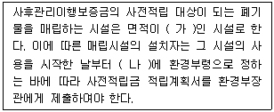
- 가 : 1만제곱미터 이상, 나 : 1개월 이내
- 가 : 1만제곱미터 이상, 나 : 15일 이내
- 가 : 3천 300제곱미터 이상, 나 : 1개월 이내
- 가 : 3천 300제곱미터 이상, 나 : 15일 이내
(정답률: 50%)
69. 다음 중 설치를 마친 후 검사기관으로부터 정기검사를 받아야하는 환경부령으로 정하는 폐기물처리시설만을 옳게 짝지은 것은?
- 소각시설-매립시설-멸균분쇄시설-소각열회수시설
- 소각시설-매립시설-소각열분해시설-멸균분쇄시설
- 소각시설-매립시설-분쇄ㆍ파쇄시설-열분해시설
- 매립시설-증발ㆍ농축ㆍ정제ㆍ반응시설-멸균분쇄시설-음식물류폐기물처리시설
(정답률: 28%)
70. 특별자치시장, 특별자치도지사, 시장ㆍ군수ㆍ구청장이 생활폐기물 수집ㆍ운반대행자에세 영업의 정지를 명하려는 경우 그 영업정지를 갈음하여 부과할 수 있는 최대 과징금은?
- 2천만원
- 5천만원
- 1억원
- 2억원
(정답률: 42%)
71. 음식물류 폐기물처리시설의 검사기관으로 옳은 것은?
- 한국산업기술시험원
- 한국환경자원공사
- 시ㆍ도 보건환경연구원
- 수도권매립지관리공사
(정답률: 69%)
72. 다음은 매립시설 및 소각시설의 주변지역 영향조사 횟수 기준에 관한 내용이다. ( )안에 옳은 내용은?
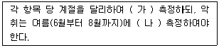
- 가 : 2회 이상, 나 : 1회 이상
- 가 : 1회 이상, 나 : 2회 이상
- 가 : 2회 이상, 나 : 4회 이상
- 가 : 1회 이상, 나 : 3회 이상
(정답률: 62%)
73. 관리형 매립시설에서 발생되는 침출수는 침출수의 배출량이 1일 2,000세제곱미터 이상인 경우 오염물질 측정주기 기준은?
- 화학적산소요구량 : 매일 2회 이상, 화학적산소요구량 외의 오염물질 : 주 1회 이상
- 화학적산소요구량 : 매일 1회 이상, 화학적산소요구량 외의 오염물질 : 주 1회 이상
- 화학적산소요구량 : 주 2회 이상, 화학적산소요구량 외의 오염물질 : 월 1회 이상
- 화학적산소요구량 : 주 1회 이상, 화학적산소요구량 외의 오염물질 : 월 1회 이상
(정답률: 69%)
74. 폐기물 처리 담당자 등은 3년마다 교육을 받아야 하는데 폐기물처분시설의 기술관리인이나 폐기물처분시설의 설치자로서 스스로 기술 관리를 하는 자에 대한 교육기관에 해당하지 않는 것은?
- 환경보전협회
- 한국폐기물협회
- 국립환경인력개발원
- 한국환경공단
(정답률: 50%)
75. 다음은 폐기물처리 신고자의 준수사항에 관한 내용이다. ( ) 안에 옳은 내용은?
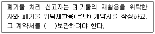
- 1년간
- 2년간
- 3년간
- 5년간
(정답률: 70%)
76. 의료폐기물 전용용기 검사기관으로 옳은 것은?
- 한국의료기기시험연구원
- 환경보전협회
- 한국건설생활환경시험연구원
- 한국화학시험원
(정답률: 39%)
77. 폐기물처리시설에 대한 기술관리대행계약에 포함될 점검항목으로 틀린 것은? (단, 중간처분시설 중 소각시설 및 고온열분해시설)
- 안전설비의 정상가동 여부
- 배출가스 중의 오염물질의 농도
- 연도 등의 기밀유지상태
- 유해가스처리시설의 정상가동 여부
(정답률: 20%)
78. 주변지역에 대한 영향 조사를 하여야 하는 ‘대통령령으로 정하는 폐기물처리시설’ 기준으로 옳지 않은 것은? (단, 폐기물처리업자가 설치, 운영)
- 시멘트 소성로(폐기물을 연료로 사용하는 경우로 한정한다.)
- 매립면적 3만 제곱미터 이상의 사업장 일반폐기물 매립시설
- 매립면적 1만 제곱미터 이상의 사업장 지정폐기물 매립시설
- 1일 처분능력이 50톤 이상인 사업장폐기물 소각시설(같은 사업장에 여러 개의 소각시설이 있는 경우에는 각 소각시설의 1일 처분능력의 합계가 50톤 이상인 경우를 말한다)
(정답률: 67%)
79. 다음 중 폐기물처리업자에게 징수된 과징금의 사용용도와 가장 거리가 먼 것은?
- 광역폐기물처리시설(지정폐기물의 공공처리시설을 포함)의 확충
- 폐기물처리기준에 적합하지 아니하게 처리한 폐기물 중 그 폐기물을 처리한 자 또는 그 폐기물의 처리를 위탁한 자를 확인할 수 없는 폐기물로 인하여 예상되는 환경상 위해의 제거를 위한 처리
- 폐기물처리시설의 지도·점검에 필요한 시설·장비의 구입 및 운영
- 폐기물처리 기술의 연구 개발을 위해 소요되는 비용
(정답률: 58%)
80. 특별자치시장, 특별자치도지사, 시장·군수·구청장이 관할 구역의 음식물류 폐기물의 발생을 최대한 줄이고 발생한 음식물류 폐기물을 적절하게 처리하기 위하여 수립하는 음식물류 폐기물발생 억제계획에 포함되어야 하는 사항과 가장 거리가 먼 것은?
- 음식물류 폐기물 재활용 및 재이용 방안
- 음식물류 폐기물의 발생 억제 목표 및 목표달성 방안
- 음식물류 폐기물의 발생 및 처리 현황
- 음식물류 폐기물 처리시설의 설치 현황 및 향후 설치 계획
(정답률: 32%)